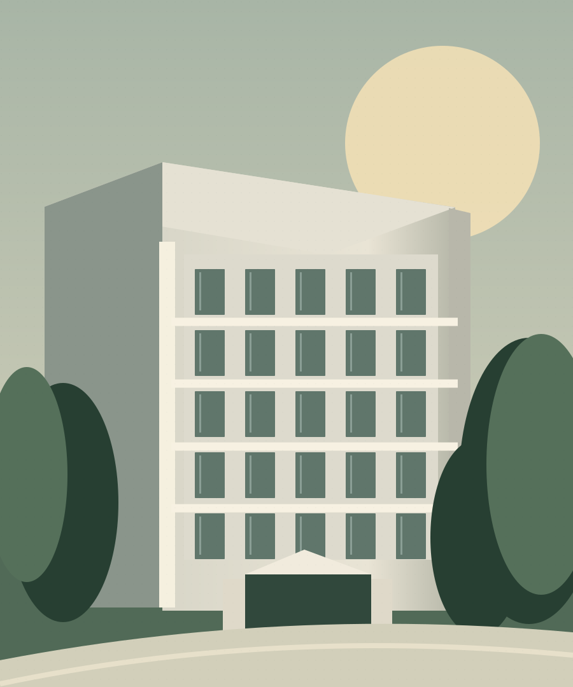
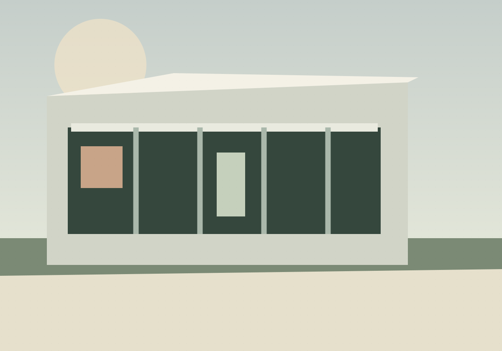
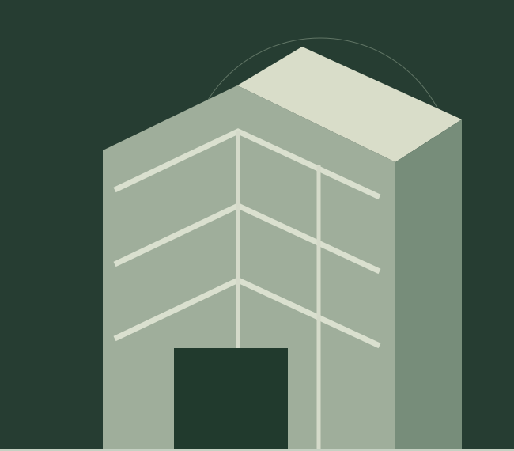

The quiet power of natural light
How thoughtful daylighting changes the way a space feels.
Thoughtfully designed environments where material, light and human experience come together.
Explore selected work
Form follows feeling — design studyFour fictional concept studies exploring the dialogue between architecture, nature and the way we live. Created solely for this engineering showcase.
 01
01A considered dialogue between landscape, shelter and natural light.

02A shared cultural space designed for openness and discovery.
 03
03A quiet retreat shaped by its relationship with nature.
 04
04An intimate reinterpretation of the traditional courtyard.
Good architecture begins with listening. Every line, material and detail should serve a clear purpose — creating spaces that feel as meaningful as they look.
Our design philosophy
How thoughtful daylighting changes the way a space feels.
Why timeless architecture starts with a considered palette.
Finding the right balance between built form and living context.